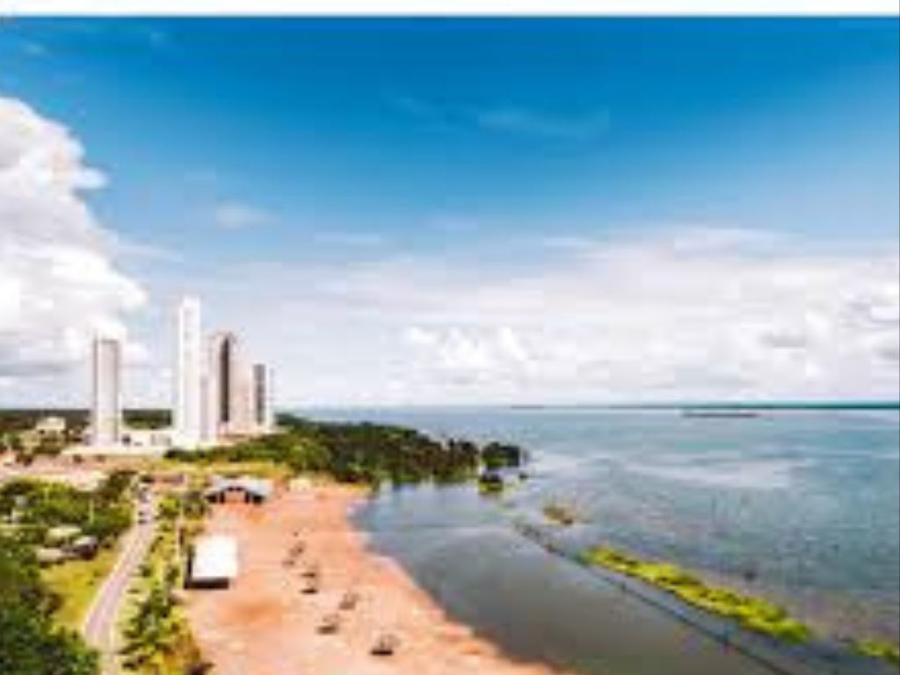

O Tocantins é o mais novo estado brasileiro, criado em 1988 a partir da divisão do estado de Goiás, e está localizado na região Norte do país. Sua capital, Palmas, foi planejada e construída para ser o centro administrativo e econômico do estado. Tocantins destaca-se por suas paisagens naturais, que combinam áreas do cerrado e da Amazônia, além de rios importantes como o Rio Tocantins e atrações turísticas como o Jalapão, famoso por suas dunas, cachoeiras e fervedouros. A economia tocantinense é baseada principalmente na agropecuária, agricultura e produção de grãos, setores que vêm impulsionando o crescimento da região. Com cultura marcada pelas tradições sertanejas e pela influência indígena, Tocantins representa um importante elo entre as regiões Norte e Centro-Oeste do Brasil.

voltar